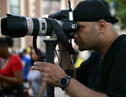

-The Man Behind the Lens-

Bill Adams
A New York native, Bill Adams has been shooting photos in Times Square for the past 10 plus years. He is versed in the proper lighting techniques to make any shot wonderful. From indoor to outdoor to through the windshield, he'll nail it. Available for all occasions, hire Bill to get it done right.
Camera: Nikon D800
Lenses: 70-200 F/2.8, 24-70 F/2.8
Style: Cinematic
Location: NYC